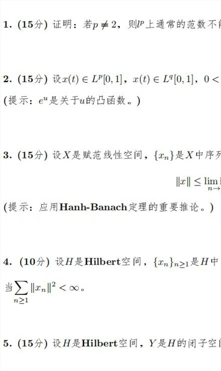
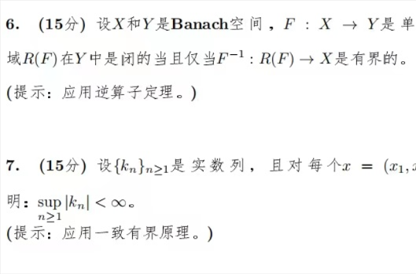

那估计是了，19wf课程的给分情况是根据这批人数分+高代总分排名顺序在正中间的几位同学的总评得出来的，排名正中间的和排名中下（但不在倒数十名以内的）都是wf的课总评不到70
20wf的实分析，实在是太喜欢这个老师了，虽然难但是都是真功夫
这怕是误差有点大吧，数分高代分高认真就行，实变算是另外的东西。。。不过我也不好说哪年的更难，毕竟往年卷子通通找不到。
本人对20那张考卷评价很高：考察的东西都是基础的概念和技巧；题目都是标准考试题：思路对的话在考场上一定能做出来，不是那种技巧很强的东西。
所以这也是我怀疑的原因，这卷子就属于质量很高，难度稳定的卷子。人家也不至于出什么偏题怪题，要比我们那张卷子再难就是考怪东西了。。。
1 个赞
就是给分贫富差距大，zyh的高代就是平均分80，给分比较合理，而wf的数分就是满绩的也有两个，但排名到一半的时候总评就不到70了，也有好几个挂科的。
不得不说19级wf数分期末确实出的太难了
不，也有数学基础良好但不想学物理就想混日子的人，这种人学ydp的课也很舒服
今年是新院长，所以也不知道具体什么活动。往年的会谈就是边吃饭边提意见和学习感受，感觉也没改多少。如果中午没什么事可以去蹭个饭，没准有机会当面对线
8点多就接到电话了
1 个赞
有啥饭 
当老师的也很为难啊，一班学生各有各的肚肠。
有人期待在课上学到尽可能多的东西，总是嫌讲的慢；有人期待跟住进度就行，仅仅想了解这个学科；有人想着少学一点是一点，只求得个比别人高的分。
然后，开学被基础课教做人，似乎不只有sjtu这样，pku数分荣誉课上一班集训队也被爆杀到最高分92，大部分七十多
5 个赞
请问一下，想在研究生阶段做AI的话，推荐找数院的相关方向老师吗？（cs那边做AI太卷了）
可以找许志钦老师看看，或者做一些不那么AI的AI
1 个赞
可以看自然科学研究院官网，看看AI+math方向和相关老师
1 个赞
上过泛函，挂了
这老师出的题目是很难吗 
还是不愿意捞人 
这周上完第一次已经感觉到敬畏了


看半张试卷感受一下吧，都怪冷锋，让鼠鼠第二年重修
2 个赞
半张？题这么多吗
1 个赞
不那么AI的AI
他指的是从中间切开的半张
2 个赞
这题目怎么和我那年看的一模一样，是21春的泛函吧。据我了解，差不多有三分之一的人期末不及格。